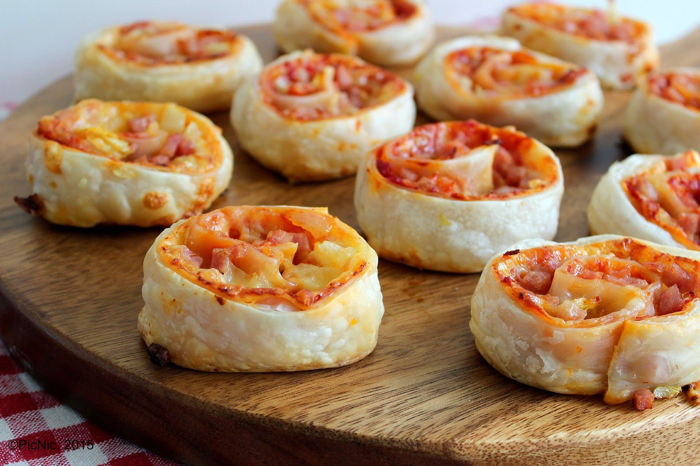

Ingredients
- 1 sheet puff pastry, thawed
- 2 tb tomato paste
- 2 tb cream cheese, softened
- 1 tb parmesan cheese
- 1 tb shredded cheese
- 1 rasher bacon
- ½ tb milk
- ½ ring pineapple (optional)
Method
- Preheat oven to 220 degrees celsius. Line a flat baking tray with baking paper.
- Soften cream cheese (if needed), mix together with the tomato paste.
- Place the bacon on a red chopping board. Remove rind and excess fat from the bacon, dice the rest.
- Cut pineapple into smaller pieces.
- Spread the cream cheese/tomato paste mixture evenly over the pastry sheet.
- Sprinkle over the diced bacon, both cheeses and the pineapple.
- Roll up tightly and then slice into 1 cm pieces. Lay flat on the baking tray.
- Lightly brush the tops with milk, using a pastry brush.
- Bake in the oven for approx 15 mins or until pastry is puffed and lightly golden.
Finished product

Video tutorial